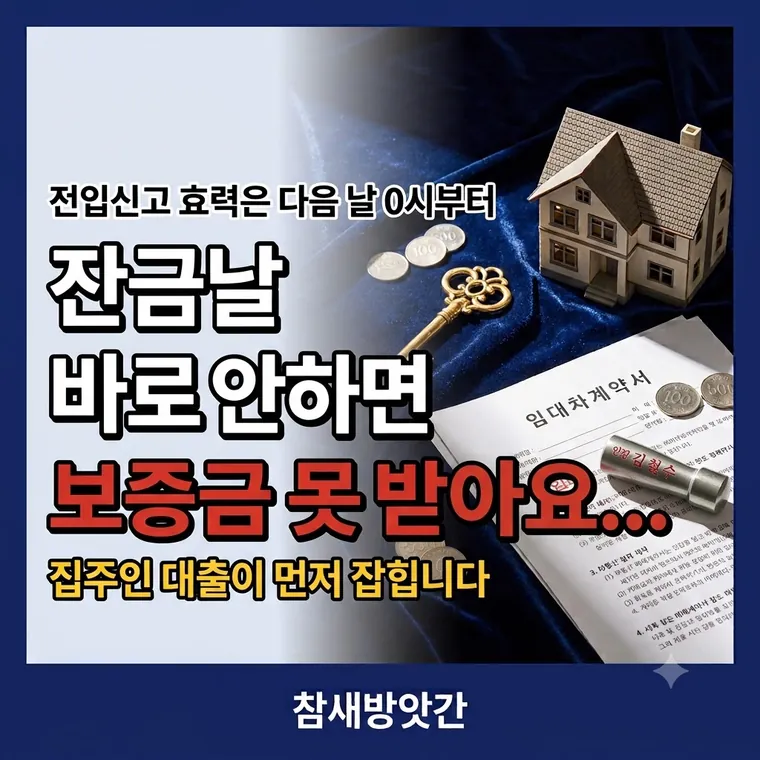

전세 계약할 때 주의사항 총정리: 전입신고 대항력 시점부터 등기부등본 확인법까지
전세 계약에서 보증금을 지키는 장치는 세 가지입니다. 그런데 그중 하나는 효력이 하루 늦게 생깁니다. 그 하루가 보증금을 가릅니다.

하루 차이가 순위를 뒤집습니다
전입신고를 하고 집에 들어가면 대항력이 생깁니다. 그런데 이 효력이 신고한 다음 날 0시부터 발생합니다.
반면 은행이 설정하는 근저당권은 당일 바로 효력이 생깁니다.
월요일 — 세입자가 잔금 치르고 전입신고
월요일 — 집주인이 은행에서 대출받고 근저당 설정
→ 근저당은 월요일, 대항력은 화요일 0시
→ 은행이 앞섭니다
경매로 넘어가면 은행이 먼저 가져갑니다. 남은 돈에서 보증금을 받는데, 모자라면 못 받습니다.
그래서 잔금 치르는 날 주민센터나 정부24에서 즉시 전입신고를 해야 합니다. 하루라도 미루면 그만큼 위험한 날이 늘어납니다.
계약서에 "잔금일 다음 날까지 임대인은 근저당 등 어떤 권리도 설정하지 않는다"는 조항을 넣으시기 바랍니다. 어기면 계약을 해제하고 손해배상을 청구할 수 있다는 문구까지 함께 넣으면 더 안전합니다.
확정일자는 따로 받아야 합니다
전입신고만으로는 부족합니다. 경매가 났을 때 순서대로 먼저 받을 권리인 우선변제권은 전입신고와 확정일자를 둘 다 갖춰야 생깁니다.
| 장치 | 무엇을 지키나 | 효력 |
|---|---|---|
| 점유 + 전입신고 | 대항력 — 집이 팔려도 계속 살 권리 | 다음 날 0시 |
| 확정일자 | 우선변제권 — 경매 때 순서대로 받을 권리 | 둘 다 갖춘 시점 |
확정일자는 주민센터, 등기소, 온라인으로 받습니다. 계약서 원본에 받아야 하고, 전입신고와 같은 날 처리하는 것이 맞습니다.
계약 전에 등기부등본부터 봅니다
계약서에 도장을 찍기 전에 등기부등본을 떼어 봐야 합니다. 인터넷등기소에서 몇 백원이면 뗍니다.
을구에 근저당권이 얼마나 잡혀 있는지 봅니다. 여기 적힌 금액은 실제 빌린 돈이 아니라 채권최고액이라, 보통 빌린 금액의 120% 정도로 적혀 있습니다.
(선순위 근저당 채권최고액 + 내 보증금) ÷ 시세
70% 이하면 비교적 안전
80% 넘으면 경매 때 보증금을 다 못 받을 위험이 큽니다
갑구도 봐야 합니다. 압류, 가압류, 가처분, 임차권등기명령이 적혀 있으면 계약을 피하는 편이 낫습니다. 이미 문제가 생긴 집이라는 뜻입니다.
그리고 등기부등본의 소유자와 계약서에 도장 찍는 사람이 같은지 신분증으로 확인합니다. 대리인이 나왔다면 인감증명서와 위임장을 대조해야 합니다.
반환보증은 마지막 안전장치입니다
권리관계를 다 확인해도 집주인이 만기에 돈을 못 돌려주는 일은 생깁니다. 그때를 대비한 것이 전세보증금 반환보증입니다.
집주인이 안 주면 보증기관이 대신 주고, 기관이 나중에 집주인에게 받아냅니다. 세입자는 소송 없이 돈을 받고 이사할 수 있습니다.
주택도시보증공사(HUG)와 한국주택금융공사(HF)는 집주인 동의 없이 세입자 혼자 가입할 수 있습니다. SGI서울보증도 있습니다.
보통 계약 기간의 절반이 지나기 전에 신청해야 합니다. 2년 계약이면 1년 안에 들어야 한다는 뜻입니다. 잔금 치르고 바로 알아보는 편이 안전합니다.
가입하려면 선순위 채권과 보증금의 합이 보증한도 안에 들어와야 하고, 등기부에 권리 침해 사항이 없어야 합니다. 보증료는 보증금과 기간에 따라 다르니 기관별로 비교해 보시기 바랍니다.
순서대로 정리하면
| 시점 | 할 일 |
|---|---|
| 계약 전 | 등기부등본 확인, 70% 계산, 소유자 대조 |
| 계약할 때 | 근저당 설정 금지 특약 넣기 |
| 잔금 당일 | 전입신고 + 확정일자 즉시 |
| 잔금 직후 | 반환보증 가입 알아보기 |
자주 묻는 질문
전입신고로 생기는 대항력은 다음 날 0시부터 효력이 발생하지만 근저당권은 설정 당일 즉시 효력이 생깁니다. 잔금 당일 집주인이 대출을 받으면 은행이 앞서게 되므로 당일 즉시 신고해야 위험한 기간을 줄일 수 있습니다.
선순위 근저당 채권최고액과 보증금을 더한 금액이 시세의 70% 이하면 비교적 안전합니다. 80%를 넘으면 경매 진행 시 보증금을 전부 회수하지 못할 위험이 커집니다.
둘 다 필요합니다. 전입신고와 점유로 생기는 것은 계속 살 권리인 대항력이고, 경매에서 순서대로 보증금을 받을 우선변제권은 확정일자까지 갖춰야 생깁니다.
주택도시보증공사(HUG)와 한국주택금융공사(HF)의 반환보증은 임대인 동의 없이 임차인이 단독으로 가입할 수 있습니다. 다만 보통 계약 기간의 절반이 지나기 전에 신청해야 합니다.